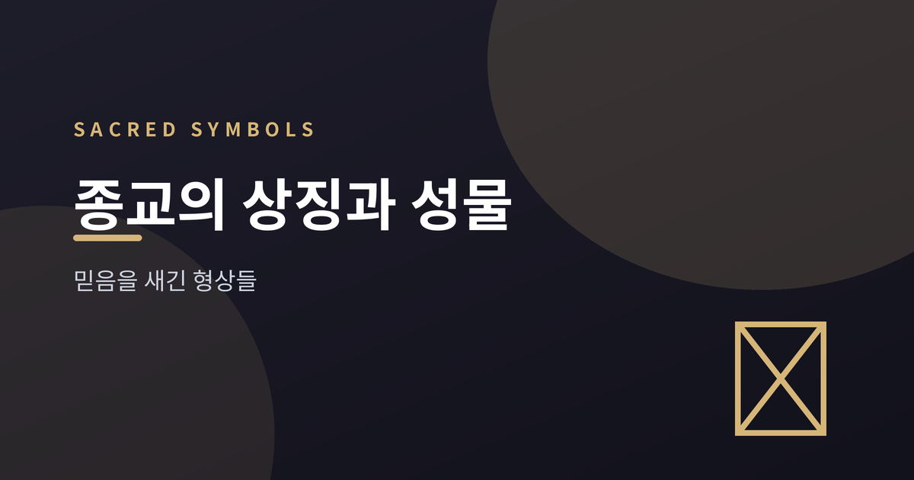
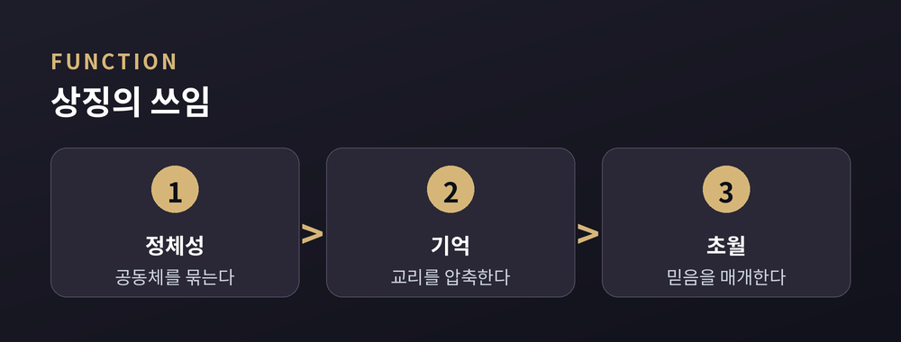
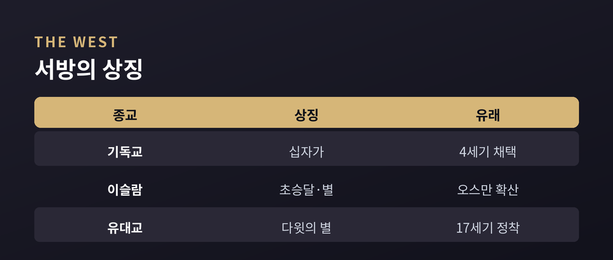
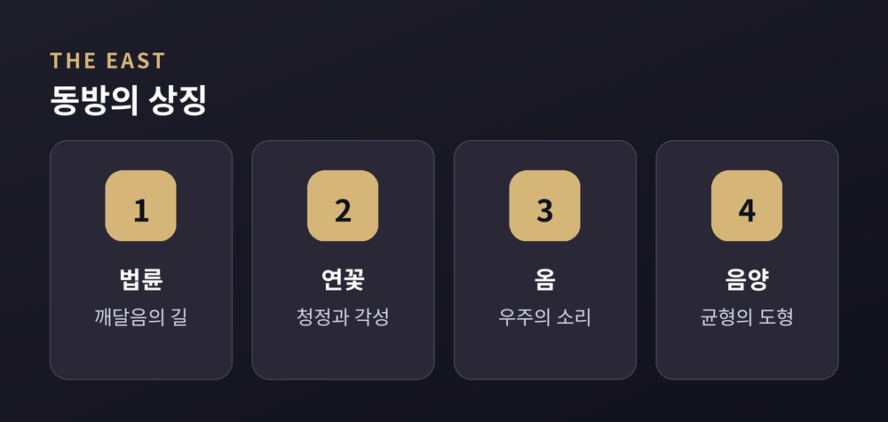

십자가·초승달·만다라에 담긴 뜻
이번 글에서는 세계 주요 종교의 상징과 성물을 정리해 보겠습니다. 어느 믿음이 옳은지를 가리려는 글이 아닙니다. 각 상징이 어디서 왔고 무엇을 뜻하는지, 그리고 그 형상을 둘러싼 관점의 차이를 담담히 살펴봅니다.

종교 상징은 눈에 보이지 않는 믿음을 눈에 보이는 형상으로 압축한 것입니다.
기능은 대체로 세 가지로 설명됩니다. 첫째, 공동체의 정체성을 묶고 소속감을 줍니다. 둘째, 복잡한 교리를 하나의 형상으로 눌러 담아 기억을 돕습니다. 셋째, 경외와 위안 같은 감정을 불러일으켜 초월적 대상과의 연결을 매개합니다.
하나의 도형이 곧 하나의 세계관인 셈입니다.

같은 별과 십자라도 유래는 저마다 다릅니다.
| 종교 | 상징 | 의미와 유래 |
|---|---|---|
| 기독교 | 십자가 | 예수의 수난과 부활. 4세기 콘스탄티누스 이후 널리 채택 |
| 이슬람 | 초승달과 별 | 이슬람보다 앞선 천체 기호, 오스만을 거쳐 대중화 |
| 유대교 | 다윗의 별 | '다윗의 방패' 육각별, 17세기 프라하에서 표지로 정착 |
십자가는 본래 수치스러운 처형 도구였습니다. 초기 신자들은 그것을 그리기조차 꺼렸습니다. 그러던 형상이 숭상받는 상징으로 뒤바뀐 것입니다.
초승달과 별은 사정이 조금 다릅니다. 교리적 사건과 직접 이어지는 연결 고리가 뚜렷하지 않아, 이를 이슬람의 상징으로 보는 것이 근거가 약하다고 여기는 무슬림 논평자도 있습니다.

동방의 상징은 우주의 질서를 도형에 담는 쪽에 가깝습니다.
불교의 법륜은 붓다의 가르침과 깨달음의 길을 나타냅니다. 바큇살 여덟 개는 팔정도를 가리키며, 아소카왕의 석주에서 오래된 자취가 확인됩니다. 진흙에서 피어나는 연꽃은 청정과 각성을 상징합니다.
힌두교의 옴은 A·U·M 세 소리로 우주 전체를 압축합니다. 만다라는 그 우주를 도상으로 그려낸 구조입니다.
음양의 태극도를 두고는 해석이 갈립니다. 도교는 음양에 우열이 없는 균형으로 보고, 유교의 한 흐름은 여기에 도덕적 위계를 부여했습니다.

성물은 유물과 성상, 경전, 성수처럼 신성함을 담았다고 여겨지는 물건을 아우릅니다.
이를 둘러싼 오랜 쟁점이 '공경이냐 우상숭배냐'입니다. 8세기 비잔틴의 성상 파괴 논쟁이 대표적입니다.
한쪽은 십계명의 형상 금지를 들어 우상숭배를 우려했습니다. 다른 쪽은 형상이 숭배가 아니라 공경의 대상이며, 그 공경은 형상 자체가 아니라 그것이 가리키는 대상에게 향한다고 답했습니다.
예전에는 이 물음이 신학의 격론이었고, 지금은 문화와 전시의 자리에서 다시 마주하게 됩니다.
정리하면 이렇습니다. 상징과 성물은 저마다 다른 길을 걸어왔지만, 보이지 않는 것을 보이게 하려는 마음은 닮아 있습니다.
"형상은 믿음이 자기 모습을 갖추려는 시도다."
각 상징 앞에서 옳고 그름을 서둘러 가르기보다, 그것이 품어온 이야기에 잠시 귀 기울여 보시면 좋겠습니다.
참고 소스